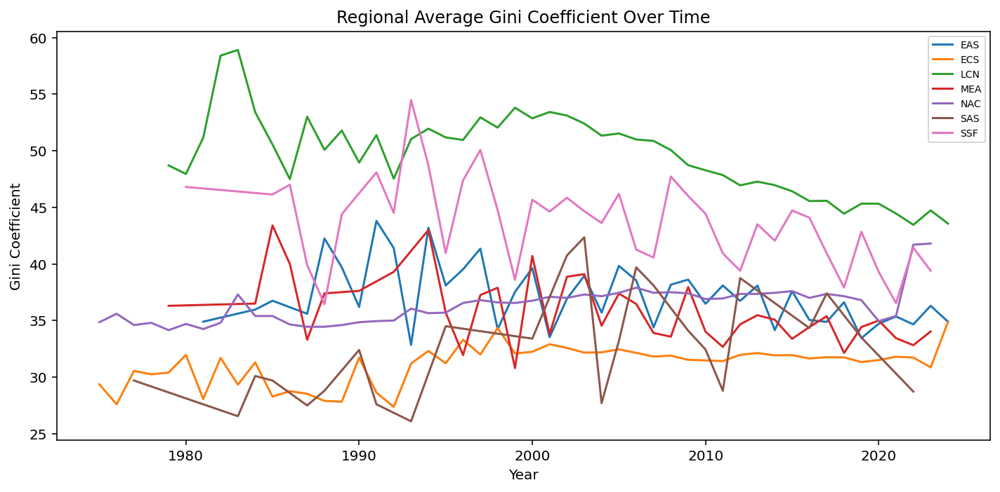

Below is what I view to be a simple set of solutions for these questions. Note that you could do this in a much fancier way, but the nice thing with this is that it should be
Question 1: Loading, Inspecting & Cleaning
We load the Penn World Tables from the local Excel file pwt110.xlsx.
import pandas as pd# Load the datapwt = pd.read_excel("pwt110.xlsx", sheet_name="Data")# Shape and column namesprint("Shape:", pwt.shape)print("Column names:\n", pwt.columns.tolist())print("Data types:\n", pwt.dtypes)
# Filter to true countries only (no aggregates)# wb.economy.DataFrame() has an 'aggregate' column we can useeconomies = wb.economy.DataFrame()true_countries = economies[economies["aggregate"] ==False].index.tolist()gini = gini[gini["economy"].isin(true_countries)]unem = unem[unem["economy"].isin(true_countries)]print("Gini countries:", gini["economy"].nunique())print("Unemployment countries:", unem["economy"].nunique())
Gini countries: 217
Unemployment countries: 217
# Countries in one dataset but not the othergini_countries =set(gini["economy"].unique())unem_countries =set(unem["economy"].unique())only_in_gini = gini_countries - unem_countriesonly_in_unem = unem_countries - gini_countriesprint("In Gini only:", len(only_in_gini), "countries")print("In Unemployment only:", len(only_in_unem), "countries")print("\nExamples in Gini only:", list(only_in_gini)[:5])print("Examples in Unemployment only:", list(only_in_unem)[:5])
In Gini only: 0 countries
In Unemployment only: 0 countries
Examples in Gini only: []
Examples in Unemployment only: []
# Reshape both to long format before merging# wbgapi returns years as columns like "YR2000", "YR2001", etc.year_cols_gini = [c for c in gini.columns if c.startswith("YR")]year_cols_unem = [c for c in unem.columns if c.startswith("YR")]gini_long = gini.melt(id_vars=["economy", "Country"], value_vars=year_cols_gini, var_name="year", value_name="gini")unem_long = unem.melt(id_vars=["economy", "Country"], value_vars=year_cols_unem, var_name="year", value_name="unemployment")# Clean year to integergini_long["year"] = gini_long["year"].str.replace("YR", "").astype(int)unem_long["year"] = unem_long["year"].str.replace("YR", "").astype(int)print("Gini long shape:", gini_long.shape)print("Unemployment long shape:", unem_long.shape)
Gini long shape: (10850, 4)
Unemployment long shape: (7595, 4)
# Outer merge with validate and indicatormerged = pd.merge( gini_long, unem_long[["economy", "year", "unemployment"]], on=["economy", "year"], how="outer", validate="1:1", indicator=True)# Merge summaryprint("Merge summary:")print(merged["_merge"].value_counts())# Share with both variables non-missingboth_nonmissing = merged["gini"].notna() & merged["unemployment"].notna()share = both_nonmissing.mean()print(f"\nShare with both non-missing: {share:.1%}")
Merge summary:
_merge
both 7378
left_only 3472
right_only 217
Name: count, dtype: int64
Share with both non-missing: 19.5%
Question 3: Reshaping
We start from wide format and reshape to long and back.
import wbgapi as wbimport pandas as pd# Re-download if needed (or reuse from Q2)gini_wide = wb.data.DataFrame("SI.POV.GINI", mrv=50, labels=True).reset_index()unem_wide = wb.data.DataFrame("SL.UEM.TOTL.ZS", mrv=50, labels=True).reset_index()# Filter to true countrieseconomies = wb.economy.DataFrame()true_countries = economies[economies["aggregate"] ==False].index.tolist()gini_wide = gini_wide[gini_wide["economy"].isin(true_countries)]unem_wide = unem_wide[unem_wide["economy"].isin(true_countries)]print("Gini wide shape:", gini_wide.shape)print(gini_wide.iloc[:3, :6]) # preview first few columns
Gini wide shape: (217, 52)
economy Country YR1975 YR1976 YR1977 YR1978
0 ZWE Zimbabwe NaN NaN NaN NaN
1 ZMB Zambia NaN NaN NaN NaN
2 YEM Yemen, Rep. NaN NaN NaN NaN
# Identify year columnsyear_cols = [c for c in gini_wide.columns if c.startswith("YR")]# Reshape to long using meltgini_long = gini_wide.melt( id_vars=["economy", "Country"], value_vars=year_cols, var_name="year", value_name="gini")unem_long = unem_wide.melt( id_vars=["economy", "Country"], value_vars=[c for c in unem_wide.columns if c.startswith("YR")], var_name="year", value_name="unemployment")# Clean year column to integergini_long["year"] = gini_long["year"].str.replace("YR", "").astype(int)unem_long["year"] = unem_long["year"].str.replace("YR", "").astype(int)print("Gini long shape:", gini_long.shape)print(gini_long.head())
Gini long shape: (10850, 4)
economy Country year gini
0 ZWE Zimbabwe 1975 NaN
1 ZMB Zambia 1975 NaN
2 YEM Yemen, Rep. 1975 NaN
3 PSE West Bank and Gaza 1975 NaN
4 VIR Virgin Islands (U.S.) 1975 NaN
# Reshape back to wide using pivot and confirm original structuregini_back_to_wide = gini_long.pivot(index=["economy", "Country"], columns="year", values="gini")gini_back_to_wide.columns = ["YR"+str(c) for c in gini_back_to_wide.columns]gini_back_to_wide = gini_back_to_wide.reset_index()print("Recovered wide shape:", gini_back_to_wide.shape)print("Original wide shape: ", gini_wide.shape)# Shapes should match (column order may differ, that's fine)
Recovered wide shape: (217, 52)
Original wide shape: (217, 52)
# Combine into one long-format panel: one row per country-yearpanel = pd.merge( gini_long, unem_long[["economy", "year", "unemployment"]], on=["economy", "year"], how="outer")print("Panel shape:", panel.shape)print(panel.head(10))
Panel shape: (11067, 5)
economy Country year gini unemployment
0 ABW Aruba 1975 NaN NaN
1 ABW Aruba 1976 NaN NaN
2 ABW Aruba 1977 NaN NaN
3 ABW Aruba 1978 NaN NaN
4 ABW Aruba 1979 NaN NaN
5 ABW Aruba 1980 NaN NaN
6 ABW Aruba 1981 NaN NaN
7 ABW Aruba 1982 NaN NaN
8 ABW Aruba 1983 NaN NaN
9 ABW Aruba 1984 NaN NaN
Question 4: GroupBy & Aggregation
import wbgapi as wbimport pandas as pdimport matplotlib.pyplot as plt# Add region information from wb.economy.DataFrame()economies = wb.economy.DataFrame()economies = economies[["region"]].reset_index()economies.columns = ["economy", "region"]# Merge region into panelpanel = pd.merge(panel, economies, on="economy", how="left")# Create decade variablepanel["decade"] = (panel["year"] //10) *10print(panel[["economy", "year", "gini", "unemployment", "region", "decade"]].head(10))
economy year gini unemployment region decade
0 ABW 1975 NaN NaN LCN 1970
1 ABW 1976 NaN NaN LCN 1970
2 ABW 1977 NaN NaN LCN 1970
3 ABW 1978 NaN NaN LCN 1970
4 ABW 1979 NaN NaN LCN 1970
5 ABW 1980 NaN NaN LCN 1980
6 ABW 1981 NaN NaN LCN 1980
7 ABW 1982 NaN NaN LCN 1980
8 ABW 1983 NaN NaN LCN 1980
9 ABW 1984 NaN NaN LCN 1980
# Mean and std of Gini by region and decaderegion_decade = panel.groupby(["region", "decade"])["gini"].agg(["mean", "std"]).reset_index()region_decade.columns = ["region", "decade", "gini_mean", "gini_std"]print(region_decade.head(20))
region decade gini_mean gini_std
0 EAS 1970 NaN NaN
1 EAS 1980 37.120000 7.680606
2 EAS 1990 38.731034 6.399559
3 EAS 2000 37.592727 5.441332
4 EAS 2010 36.091860 3.766297
5 EAS 2020 35.113043 2.953319
6 ECS 1970 29.908333 3.858511
7 ECS 1980 28.981250 4.379530
8 ECS 1990 31.779054 5.217999
9 ECS 2000 32.135200 4.171624
10 ECS 2010 31.737615 4.471597
11 ECS 2020 31.571141 4.965207
12 LCN 1970 48.700000 NaN
13 LCN 1980 51.300000 6.934896
14 LCN 1990 51.301869 6.078946
15 LCN 2000 51.522603 4.053466
16 LCN 2010 46.405556 4.341051
17 LCN 2020 44.329032 4.591810
18 MEA 1970 36.300000 NaN
19 MEA 1980 38.657143 4.916929
# Top 3 countries by average Gini over the whole periodtop3 = (panel.groupby(["economy", "Country"])["gini"] .mean() .sort_values(ascending=False) .head(3) .reset_index())top3.columns = ["economy", "country", "avg_gini"]print("Top 3 countries by average Gini:\n", top3)
Top 3 countries by average Gini:
economy country avg_gini
0 NAM Namibia 63.625000
1 ZAF South Africa 61.883333
2 BWA Botswana 57.520000
# Use transform() to compute each country-year's Gini relative to its# regional average FOR THAT YEARpanel["region_year_avg_gini"] = panel.groupby(["region", "year"])["gini"].transform("mean")panel["gini_relative_to_region"] = panel["gini"] - panel["region_year_avg_gini"]# Interpretation: a positive value means this country's Gini is ABOVE# the regional average that year; negative means below.# It tells us whether a country is more or less unequal than its neighbours# in a given year, controlling for region-wide trends.print(panel[["economy", "year", "gini", "region_year_avg_gini", "gini_relative_to_region"]].dropna().head(10))
# Line chart: regional average Gini over timeregion_year = panel.groupby(["region", "year"])["gini"].mean().reset_index()fig, ax = plt.subplots(figsize=(10, 5))for region, group in region_year.groupby("region"): group = group.dropna(subset=["gini"]) ax.plot(group["year"], group["gini"], label=region)ax.set_title("Regional Average Gini Coefficient Over Time")ax.set_xlabel("Year")ax.set_ylabel("Gini Coefficient")ax.legend(loc="upper right", fontsize=7)plt.tight_layout()plt.show()

Question 5: Open-Ended (Guidance Only)
This question asks you to download two macroeconomic time series from FRED and combine them into a dual-axis plot. Below you can see a roadmap, though depending on what you do, you will need to write your own code… While there is some indicative code below, this should be viewed as a guide only.
Step 1: Download from FRED
Go to FRED and search for two series, e.g.:
UNRATE — US Unemployment Rate (monthly)
CPIAUCSL — US CPI (monthly, use pct_change(12) to get year-on-year inflation)
Download both as CSV files. Each will have two columns: DATE and a value column.
Step 2: Load and standardise the date column
import pandas as pd
unemp = pd.read_csv("UNRATE.csv")
cpi = pd.read_csv("CPIAUCSL.csv")
# Convert DATE to datetime — always do this explicitly
unemp["DATE"] = pd.to_datetime(unemp["DATE"])
cpi["DATE"] = pd.to_datetime(cpi["DATE"])
If one series is monthly and another is quarterly, you’ll see gaps after the merge. Check with:
print(df.isnull().sum())
print(df["DATE"].diff().value_counts()) # shows time gaps
To align frequencies, resample to quarterly:
df = df.set_index("DATE")
df_quarterly = df.resample("QS").mean() # take mean within each quarter
Step 5: Dual-axis line plot
import matplotlib.pyplot as plt
fig, ax1 = plt.subplots(figsize=(10, 5))
# Left axis: unemployment
ax1.plot(df_quarterly.index, df_quarterly["UNRATE"], color="steelblue", label="Unemployment")
ax1.set_ylabel("Unemployment Rate (%)", color="steelblue")
# Right axis: inflation
ax2 = ax1.twinx()
ax2.plot(df_quarterly.index, df_quarterly["inflation"], color="firebrick", label="Inflation")
ax2.set_ylabel("Inflation (%)", color="firebrick")
ax1.set_title("US Unemployment and Inflation Over Time")
fig.tight_layout()
plt.show()
What to write (2-3 sentences)
Describe the broad trends you see: do the two series move together or in opposite directions? Can you spot any well-known episodes (e.g. the 2008 crisis, COVID-19)? Does your plot suggest any relationship between unemployment and inflation (the Phillips curve)?
NOTE: These solutions deliberately use only pandas, matplotlib, and wbgapi. There are no specialised econometrics libraries needed (yet). The goal here is to generate clean, readable simple code.